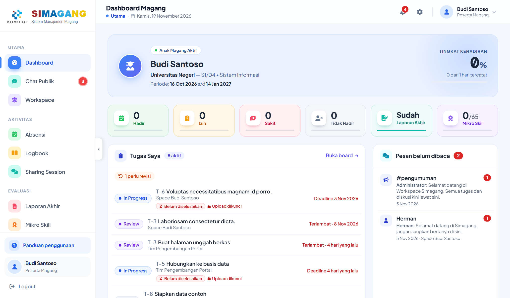
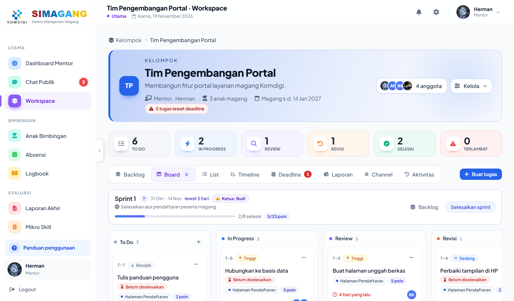
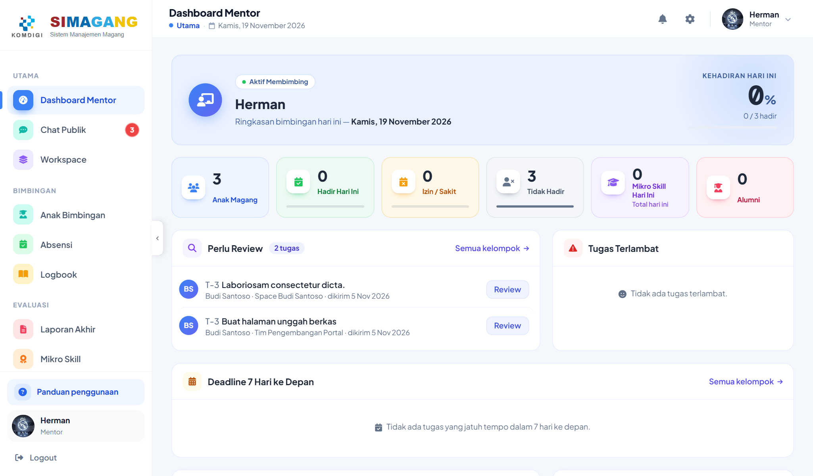
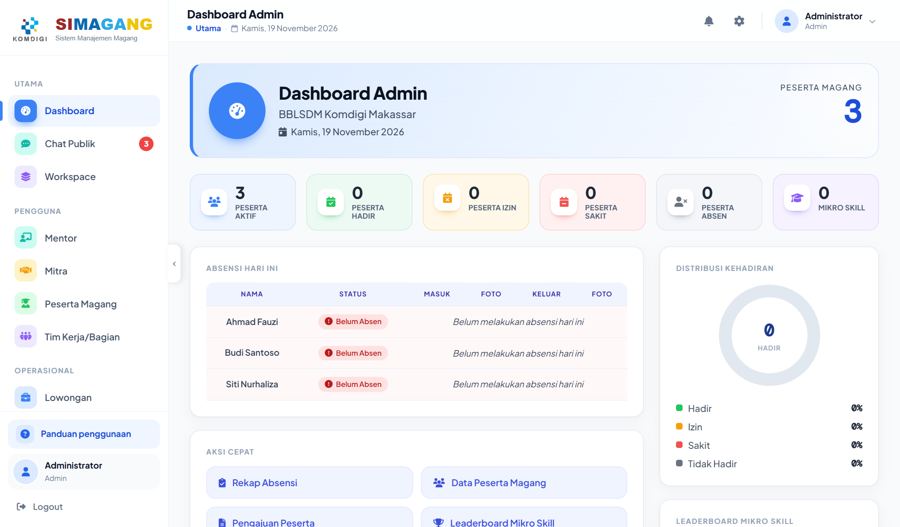

Magang merupakan sarana penting untuk menyiapkan talenta digital yang siap bekerja. Pelaksanaannya melibatkan banyak pihak, yaitu peserta, mentor, pengelola program, institusi pendidikan, dan industri mitra, sehingga memerlukan pengelolaan yang tertib, mudah dipantau, dan dapat dipertanggungjawabkan.
Sistem Manajemen Magang (SIMAGANG) disediakan untuk menyatukan seluruh proses tersebut dalam satu aplikasi web: pendaftaran, pengajuan, absensi, logbook, penugasan, sampai laporan akhir dan penilaian. Agar aplikasi ini dipakai dengan cara yang sama oleh semua pihak, disusunlah Buku Manual ini.
Buku Manual ini sengaja dibuat ringkas dan berorientasi pada tindakan. Setiap peran dapat langsung menuju bagiannya, mengikuti langkah-langkah kerja yang disajikan secara berurutan, dan memperoleh hasil yang jelas pada tiap langkah. Dokumen ini akan diperbarui bila aplikasi atau ketentuan berubah.
Kami berharap Buku Manual ini membantu seluruh pengguna memanfaatkan SIMAGANG secara optimal, sehingga penyelenggaraan magang menjadi lebih tertib, transparan, dan berkualitas.
Makassar, November 2026
Kepala BBLSDM Komdigi Makassar,
Program magang di lingkungan BBLSDM Komdigi Makassar diikuti peserta dari berbagai institusi pendidikan dan industri mitra. Tanpa sistem terpadu, data pendaftaran, kehadiran, catatan harian, tugas, dan penilaian tersebar di banyak berkas sehingga sulit dipantau.
SIMAGANG dikembangkan untuk menyatukan seluruh proses itu dalam satu aplikasi web bagi enam peran. Buku Manual ini disusun agar setiap peran memahami tugasnya dan memakai aplikasi dengan cara yang seragam.
Maksud: pedoman praktis yang dapat diikuti langkah demi langkah tanpa pelatihan khusus. Tujuan:
Bacalah Bab II dan III sekali, lalu langsung menuju bagian peran Anda pada Bab IV.
| Anda sebagai | Bacalah | Halaman |
|---|---|---|
| Peserta Magang | Bab II, III, lalu Bab IV bagian A | 8 |
| Mentor | Bab II, III, lalu Bab IV bagian B | 11 |
| Admin / Super Admin | Bab II, III, lalu Bab IV bagian C | 13 |
| Institusi Pendidikan | Bab II, III, lalu Bab IV bagian D | 15 |
| Industri Mitra | Bab II, III, lalu Bab IV bagian E | 16 |
Bab V (ketentuan, data, dan bantuan, halaman 17) berlaku bagi semua peran.
| Istilah | Pengertian |
|---|---|
| SIMAGANG | Sistem Manajemen Magang, aplikasi web yang diatur dalam petunjuk ini. |
| Peserta Magang | Mahasiswa atau siswa yang sedang atau pernah menjalani magang. |
| Mentor | Pegawai pembimbing yang memberi tugas dan menilai peserta. |
| Admin / Super Admin | Pengelola aplikasi. Super Admin juga mengelola akun admin dan basis pengetahuan AI. |
| Institusi | Sekolah, kampus, atau lembaga asal peserta yang mengajukan magang. |
| Industri (Mitra) | Perusahaan atau instansi mitra yang membuka lowongan dan menerima peserta. |
| Lowongan | Penawaran posisi magang beserta divisi, kuota, dan tanggalnya. |
| Pengajuan | Permohonan magang dari institusi untuk satu lowongan; berstatus Menunggu, Disetujui, Revisi, atau Ditolak. |
| Workspace | Ruang kerja digital berisi kelompok dan tugas peserta. |
| Kelompok | Satu tim kerja buatan mentor di Workspace beserta anggota dan tugasnya. |
| Backlog, Sprint, Board | Daftar rencana tugas; periode kerja berjangka dengan target; papan tugas per status. |
| Review / Revisi | Tugas yang dikirim untuk dinilai mentor; tugas yang diminta diperbaiki. |
| Timeline | Tampilan jadwal tugas menurut tenggat. |
| Absensi | Catatan kehadiran harian (Hadir, Izin, Sakit) dengan check in dan check out serta foto bukti. |
| Logbook | Catatan aktivitas harian peserta, disetujui mentor. |
| Mikro Skill | Kursus singkat Digitalent Komdigi yang dikerjakan peserta dan dibuktikan dengan unggahan. |
| Sharing Session | Sesi berbagi pengetahuan terjadwal dengan materi dan form evaluasi. |
| Laporan Akhir | Laporan penutup magang yang diunggah peserta dan dinilai mentor (nilai 0 sampai 100). |
| Alumni | Peserta yang telah dinyatakan selesai (dilepas) dari magang. |
| Chat Publik | Ruang obrolan bersama untuk semua pengguna yang sudah login. |
| SIMA | Asisten tanya jawab (chatbot) yang menjawab berdasarkan dokumen pengetahuan. |
Tangkapan layar dalam dokumen ini memakai akun contoh; nama, angka, dan tampilan di aplikasi sebenarnya dapat berbeda.
SIMAGANG membantu pengelolaan magang dari hulu ke hilir: membuka lowongan, memproses pengajuan, mencatat kehadiran dan aktivitas, membagi serta menilai tugas, hingga menutup magang dengan laporan akhir dan sertifikat. Aplikasi diakses lewat peramban (browser) dan tampilannya menyesuaikan layar komputer maupun ponsel.
Menu berada di sisi kiri layar dan berbeda menurut peran. Modul yang tersedia:
| Modul / menu | Kegunaan |
|---|---|
| Dashboard | Ringkasan kondisi dan pintasan pekerjaan hari ini. |
| Chat Publik | Obrolan bersama; mentor dapat menyematkan pengumuman. Angka merah di menu menandakan pesan belum dibaca. |
| Workspace | Kelompok kerja dengan Backlog, Board, List, Timeline, Deadline, Laporan, Channel, dan Aktivitas. |
| Absensi | Mencatat dan memantau kehadiran harian. |
| Logbook | Mencatat dan menyetujui aktivitas harian. |
| Sharing Session | Jadwal, materi, dan evaluasi sesi berbagi pengetahuan. |
| Mikro Skill | Kursus singkat Digitalent dan bukti penyelesaiannya. |
| Laporan Akhir | Unggah, penilaian, dan persetujuan laporan penutup magang. |
| Lowongan dan Pengajuan | Pembukaan lowongan, verifikasi, dan pengajuan peserta oleh institusi. |
| Data Master | Pengelolaan mentor, mitra, peserta magang, serta tim kerja/bagian. |
| Monitoring | Pemantauan peserta, industri, dan laporan secara bulanan. |
Gunakan peramban versi terbaru dengan koneksi internet. Pengguna ponsel membuka menu lewat ikon tiga garis di kiri atas. Tampilan terang atau gelap dapat dipilih lewat ikon roda gigi di bagian atas.
Setiap akun hanya melihat menu dan data yang menjadi haknya. Pembagian peran:
| Peran | Tugas utama | Menu yang tersedia |
|---|---|---|
| Peserta Magang | Absen, mengisi logbook, mengerjakan tugas, mengirim laporan akhir. | Dashboard, Chat Publik, Workspace, Absensi, Logbook, Sharing Session, Laporan Akhir, Mikro Skill |
| Mentor | Membimbing, membuat kelompok dan tugas, menilai. | Dashboard, Chat Publik, Workspace, Anak Bimbingan, Absensi, Logbook, Laporan Akhir, Mikro Skill |
| Admin | Mengelola data master, lowongan, pengajuan, dan memantau seluruh peserta. | Seluruh menu pengelolaan dan monitoring |
| Super Admin | Seperti Admin, ditambah mengelola akun admin dan basis pengetahuan AI. | Menu Admin + Admin dan Manajemen AI RAG |
| Institusi | Mengajukan peserta dan memantau peserta serta nilainya. | Dashboard, Chat Publik, Lowongan, Pengajuan, Peserta, Absensi, Logbook, Mikro Skill, Nilai |
| Industri | Membuka lowongan, memproses pengajuan, dan memantau peserta di perusahaannya. | Dashboard, Chat Publik, Lowongan, Pengajuan, Peserta, Absensi, Logbook, Mikro Skill, Laporan |
Magang di SIMAGANG berjalan dalam lima tahap berurutan. Tahap berikutnya hanya dapat berjalan setelah tahap sebelumnya selesai.
| Tahap | Pelaku | Hasil |
|---|---|---|
| 1. Lowongan | Industri atau Admin membuat; Admin memverifikasi lowongan industri. | Lowongan berstatus Disetujui dan tampil bagi institusi. |
| 2. Pengajuan | Institusi mengajukan; Admin atau Industri memproses. | Pengajuan berstatus Disetujui; peserta didaftarkan dan ditempatkan pada tim serta mentor. |
| 3. Pelaksanaan | Peserta menjalankan; Mentor membimbing dan menilai. | Absensi, logbook, tugas Workspace, mikro skill, dan sharing session tercatat. |
| 4. Penutupan | Peserta mengunggah; Mentor menilai; Admin memantau. | Laporan akhir disetujui, nilai dan sertifikat tersedia. |
| 5. Alumni | Admin melepas peserta. | Peserta berpindah ke daftar alumni; data tetap dapat dilihat. |
Selain empat kegiatan harian di atas, peserta mengerjakan mikro skill dan mengikuti sharing session. Mentor memantau semuanya dari dashboard dan menyetujui logbook.
| Objek | Status | Artinya |
|---|---|---|
| Pengajuan | Menunggu · Disetujui · Revisi · Ditolak | Disetujui dan Ditolak final, tidak dapat diubah lagi. |
| Lowongan | Pending · Disetujui · Ditolak | Hasil verifikasi admin; lowongan juga Dibuka atau Ditutup. |
| Absensi | Hadir · Izin · Sakit · Tidak Hadir | Belum absen sampai lewat 12.00 WITA otomatis Tidak Hadir. |
| Dokumen izin/sakit | Menunggu · Disetujui · Ditolak | Diperiksa admin atau industri. |
| Tugas | To Do · In Progress · Review · Revisi · Selesai | Posisi tugas pada papan kerja. |
| Laporan akhir | Menunggu · Disetujui · Perlu Revisi · Ditolak | Nilai 0–100 dari mentor. |
Tiap bagian disusun dengan pola yang sama: Cara … berisi langkah singkat dan diakhiri Hasil yang harus terlihat. Nama menu ditulis tebal sesuai tulisan di aplikasi.
Pekerjaan harian Anda: absen, mengisi logbook, mengerjakan tugas, dan memantau pesan. Dashboard menjadi titik awalnya.


Tab lain pada kelompok: Backlog (rencana tugas), Timeline dan Deadline (jadwal dan tenggat), Laporan (grafik), Channel (obrolan kelompok), dan Aktivitas (riwayat).
Dashboard Mentor merangkum tugas yang perlu dinilai, tugas terlambat, tenggat tujuh hari, progres kelompok, dan absensi anak bimbingan hari ini.

Admin mengelola data master dan proses pendaftaran serta memantau seluruh peserta. Dashboard Admin menampilkan peserta aktif, absensi hari ini, dan distribusi kehadiran.

| Data | Menu | Langkah |
|---|---|---|
| Mentor | Mentor | Tambah Mentor: isi tim, jabatan, kontak; ubah atau hapus lewat kolom Aksi. |
| Mitra | Mitra | Tambah Mitra (institusi atau industri); saring menurut jenis. |
| Peserta | Peserta Magang | Tambah Peserta beserta institusi, tim, dan mentor; tabel pertama aktif, berikutnya alumni. |
| Tim/Bagian | Tim Kerja/Bagian | Tambah Tim; nama tim dipakai saat menempatkan mentor dan peserta. |
| Kebutuhan | Menu | Cara singkat |
|---|---|---|
| Kehadiran | Absensi | Saring peserta, status, tanggal; periksa dokumen izin/sakit lewat Aksi lalu pilih Disetujui atau Ditolak. |
| Aktivitas harian | Logbook | Cari nama atau isi aktivitas, batasi dengan tanggal. |
| Masuk, keluar, aktif | Monitoring Peserta Magang | Pilih bulan; tandai peserta sebagai pelepasan lewat Aksi; Export Excel untuk data. |
| Mitra industri | Monitoring Industri | Lihat total, aktif, dan alumni tiap industri; buka rincian lewat Aksi. |
| Laporan akhir | Laporan | Buka laporan, tetapkan Disetujui (hanya setelah mentor menilai), Revisi, atau Ditolak dengan catatan. |
Dashboard Institusi menampilkan rincian status pengajuan, pintasan, dan profil institusi. Lengkapi profil lewat Edit Profil Institusi agar data pengajuan akurat.
| Kebutuhan | Menu | Cara singkat |
|---|---|---|
| Daftar peserta | Peserta Magang | Cari nama; lihat program studi serta jumlah logbook, absensi, mikro skill. |
| Kehadiran | Absensi | Saring peserta dan tanggal; kartu Riwayat Absensi menampilkan persentase kehadiran. |
| Aktivitas | Logbook | Buka lewat Aksi untuk membaca isi dan foto dokumentasi. |
| Kursus | Mikro Skill | Pilih satu peserta untuk melihat kursus dan bukti yang ia kirim. |
| Sertifikat dan nilai | Nilai | Lihat tanggal terbit, nilai dan grade sertifikat, serta nilai laporan; buka sertifikat lewat Aksi. |
Dashboard Industri menampilkan total lowongan, lowongan yang sudah diverifikasi, dan pengajuan masuk. Bila diminta, klik Lengkapi Profil terlebih dahulu agar lowongan dapat diproses.
Ketentuan berikut dijalankan langsung oleh aplikasi, sehingga berlaku sama bagi semua pengguna.
| Hal | Ketentuan |
|---|---|
| Hari absensi | Senin sampai Jumat. Sabtu, Minggu, dan libur nasional tidak ada absensi. |
| Absensi masuk dan keluar | Masuk pukul 08.00 sampai 12.00 WITA, satu kali sehari, Hadir wajib berfoto (JPG/PNG, maks 2 MB). Keluar mulai pukul 16.00 WITA, dengan foto, setelah absen masuk berstatus Hadir. |
| Izin dan sakit | Catatan wajib. Izin wajib melampirkan dokumen (PDF, DOC, DOCX, JPG, PNG, maks 5 MB); sakit boleh tanpa dokumen. Dokumen diperiksa admin atau industri. |
| Tidak absen | Setelah pukul 12.00 WITA, yang belum absen otomatis tercatat Tidak Hadir (diproses pukul 12.05 WITA). |
| Logbook | Uraian maks 1.000 karakter; foto opsional (JPG/PNG, maks 2 MB); dapat diubah atau dihapus penulisnya. |
| Laporan akhir | Satu laporan per peserta: PDF/DOC/DOCX maks 10 MB; maks 3 berkas proyek (maks 100 MB) dan 3 tautan; testimoni 20 sampai 1.000 karakter. |
| Nilai laporan | Nilai 0–100 dari mentor: A = 85–100, B = 70–84, C = 0–69. Aplikasi tidak menetapkan nilai minimal kelulusan. |
| Nilai sertifikat | Enam aspek bernilai 0–100: A ≥ 85, B+ 80–84, B 70–79, C+ 65–69, C 60–64, D 50–59, E < 50. |
| Pertanyaan | Jawaban |
|---|---|
| Form absensi tidak bisa dibuka. | Absensi masuk hanya pukul 08.00–12.00 WITA pada hari kerja, dan hanya sekali sehari. Peserta tidak dapat mengubah absensi sendiri; hubungi mentor atau admin. |
| Tombol Check Out ditolak. | Check Out baru bisa mulai pukul 16.00 WITA dan setelah absen masuk berstatus Hadir. |
| Lowongan belum tampil bagi institusi. | Lowongan industri harus berstatus Disetujui oleh admin dan masih Dibuka (kuota belum habis). |
| Pengajuan berstatus Revisi. | Buka pengajuan, perbaiki sesuai catatan admin, lalu kirim ulang. |
| Laporan akhir tidak bisa diunggah lagi. | Satu peserta satu laporan. Unggah ulang hanya bila berstatus Revisi; yang sudah Disetujui tidak dapat diubah. |
| Tutorial tidak muncul sendiri. | Klik Panduan penggunaan di menu kiri, lalu Mulai tutorial halaman ini. |
Buku Manual ini diharapkan membantu setiap pengguna memakai SIMAGANG dengan benar, tertib, dan efisien. Karena aplikasi terus dikembangkan, tampilan dan menu dapat berubah; tutorial di dalam aplikasi selalu menjadi rujukan terbaru untuk setiap halaman.
Kritik, saran, dan temuan kekeliruan dapat disampaikan kepada admin untuk perbaikan edisi berikutnya.
| Peran | Tiga hal yang perlu diingat |
|---|---|
| Peserta Magang | Absen masuk 08.00–12.00 WITA dan Check Out mulai 16.00 WITA · isi logbook · kirim tugas ke Review saat selesai dan unggah laporan akhir. |
| Mentor | Tinjau kartu Perlu Review secara rutin · setujui logbook · beri nilai laporan akhir (hanya sekali) dan terbitkan sertifikat. |
| Admin / Super Admin | Verifikasi lowongan dan proses pengajuan (final bila Disetujui/Ditolak) · jaga kebenaran data master · lepas peserta yang selesai. |
| Institusi | Lengkapi profil sebelum mengajukan · perbaiki pengajuan berstatus Revisi · pantau kehadiran dan nilai peserta. |
| Industri | Lengkapi profil · tunggu verifikasi lowongan · proses pengajuan masuk dan pantau peserta. |
| Edisi | Tanggal | Keterangan |
|---|---|---|
| 1 | November 2026 | Penerbitan pertama. |